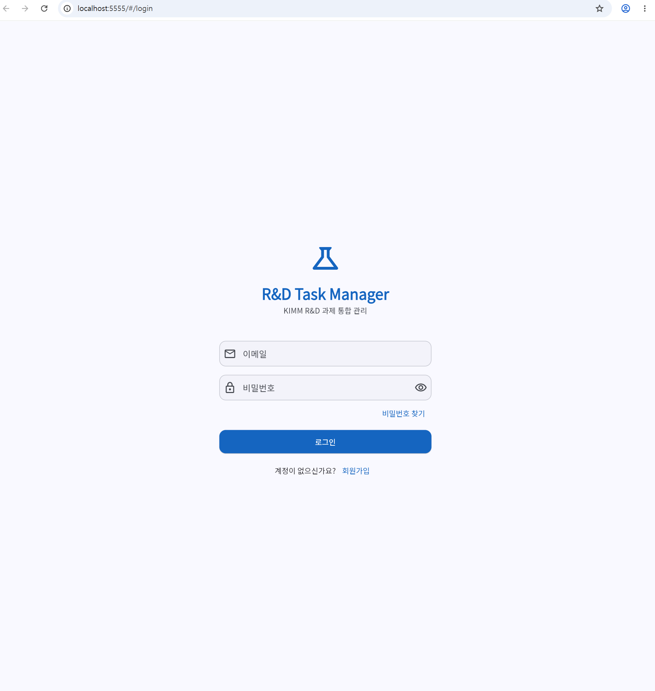
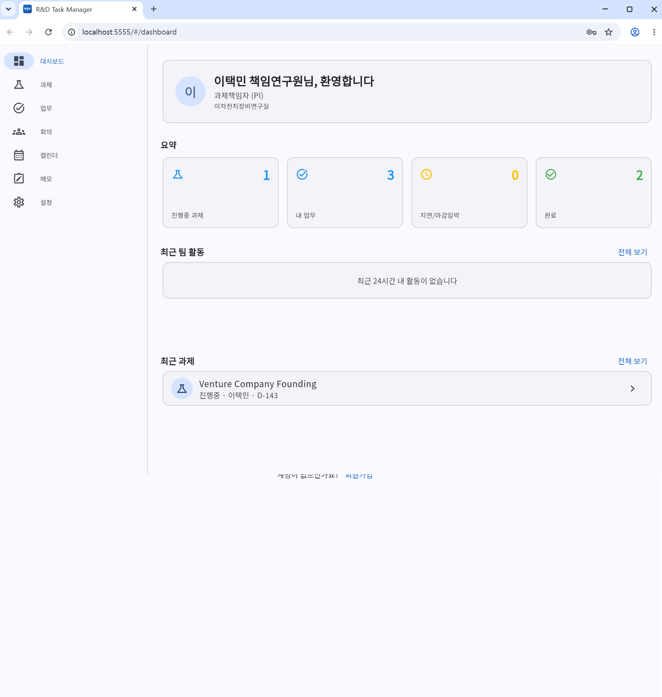
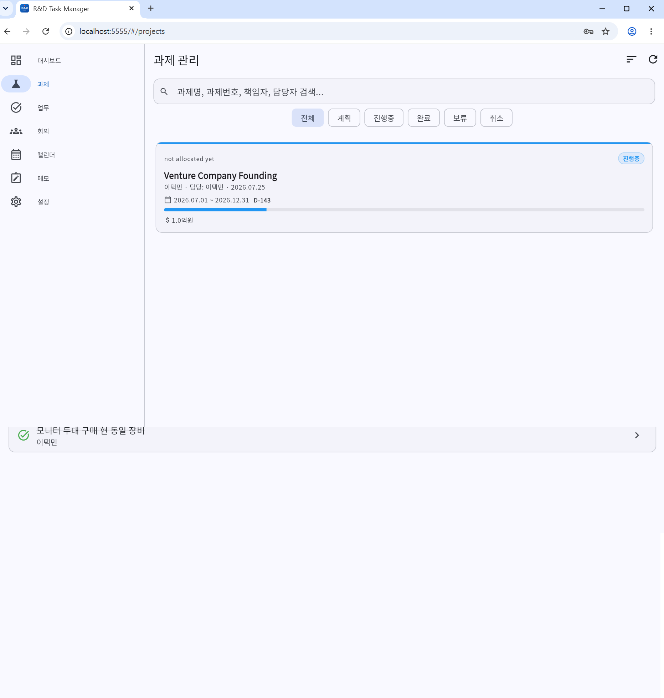
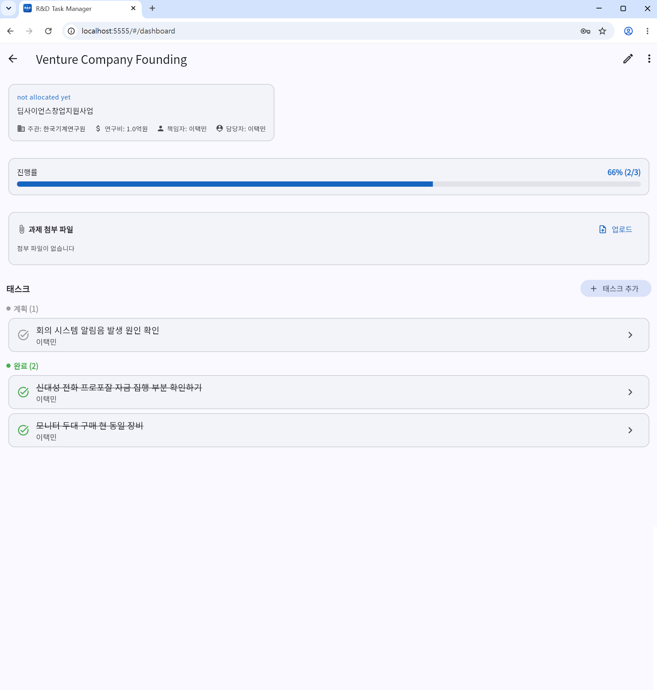
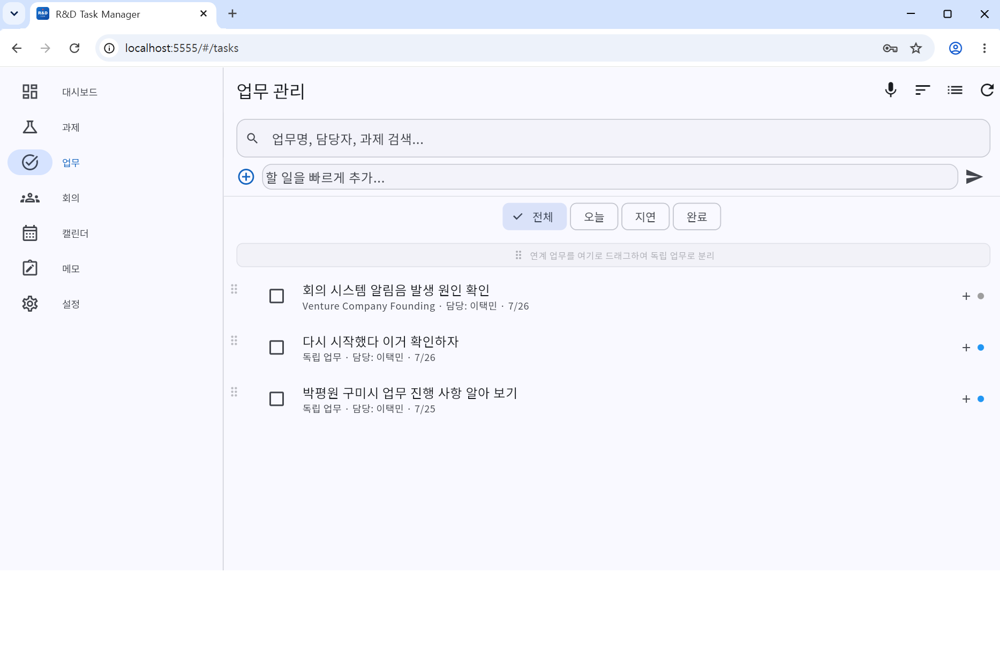
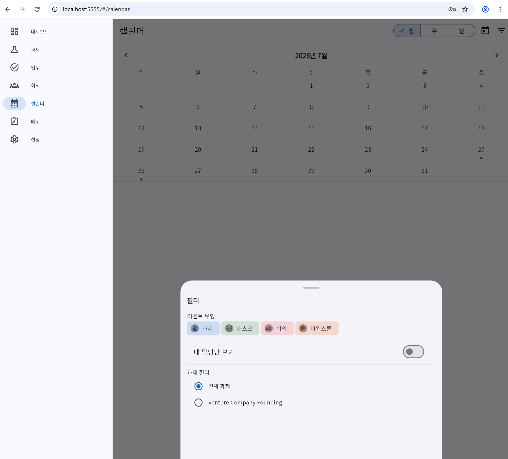
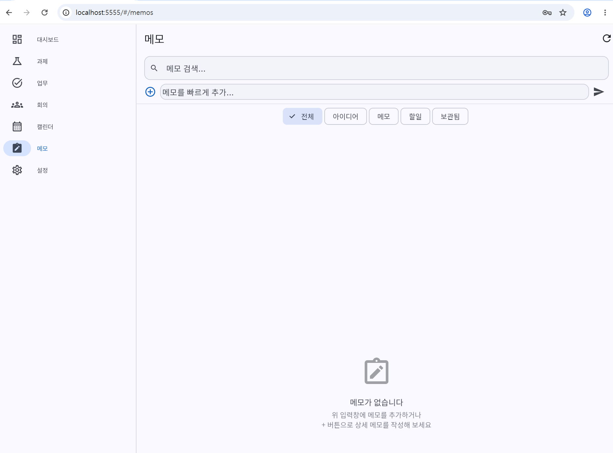
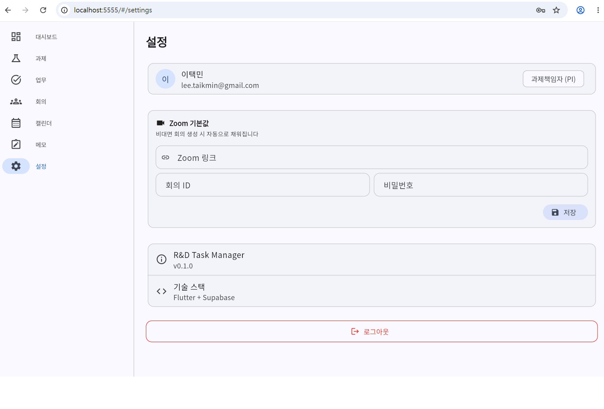

R&D Task Manager
한국기계연구원(KIMM) R&D 과제 통합 관리 웹앱
과제 · 업무 · 회의 · 캘린더 · 메모 · 팀 활동을 하나의 앱으로. AI 회의록 자동 생성, 3시간마다 활동 요약 이메일.
1. 이 앱이 하는 일
연구실/팀 단위에서 여러 사람이 같은 과제·업무·회의를 공유하고, 누가 무엇을 하고 있는지 실시간으로 볼 수 있도록 만든 통합 관리 앱입니다.
📁 과제 관리
책임자(PI) + 담당자 지정, 팀 멤버 다중 배정, 상태별 필터, 검색.✅ 업무 관리
독립/연계 업무, 하위업무 트리, 드래그 앤 드롭, 색상 태그, 완료/NEW 뱃지.🗓 회의 관리
안건/참석자/문서/타임라인 4탭, 대면·비대면·하이브리드 모드.🎙 AI 회의록
Web Speech API 실시간 STT + Gemini 2.5 Pro로 회의록 · 업무 자동 추출.📆 캘린더
월/주/일간 뷰, 업무·회의·과제·일일기록 통합 표시.📝 메모
완전 개인용 메모 (Admin도 접근 불가), 카테고리/고정.👥 팀 활동
모든 변경사항 자동 로그 + Realtime 대시보드 스트림 + 요약 이메일.📱 PWA
홈 화면에 추가하면 네이티브 앱처럼 사용 가능 (iOS/Android).2. 화면 미리보기









3. 모바일(핸드폰)에서 쓰기 — PWA
별도의 앱 스토어 등록 없이도 PWA(Progressive Web App)로 아이폰·안드로이드에서 네이티브 앱처럼 쓸 수 있습니다.
아이폰(iOS Safari)
- Safari로
https://rd-task-manager-coral.vercel.app접속 - 하단 공유(⎋) 버튼 → 홈 화면에 추가
- 홈 화면 아이콘 실행 → 주소창 없는 전체화면 앱처럼 동작
안드로이드(Chrome)
- Chrome으로 접속 → 우측 상단 ⋮ 메뉴 → 앱 설치(또는 홈 화면에 추가)
- 홈 화면에서 실행하면 앱처럼 동작
4. 다른 사람과 함께 쓰기 (팀 협업 원리)
이 앱은 Supabase라는 클라우드 백엔드를 씁니다. 모든 사용자가 같은 데이터베이스에 접속하기 때문에, 한 사람이 과제를 만들면 팀원 모두가 즉시 보게 됩니다.
실시간 동기화 (Realtime)
- Supabase Realtime 채널을
tasks등 주요 테이블에 연결해 두어서, 다른 사람이 데이터를 바꾸면 새로고침 없이 자동 반영됩니다. - 대시보드의 최근 팀 활동 패널이 대표 예 — 팀원이 업무를 완료하는 순간 카드가 나타납니다.
권한 (RLS: Row Level Security)
- 기본 원칙: 메모만 개인, 나머지는 팀 공용.
- 로그인한 사용자면 과제/업무/회의/캘린더/활동 로그에 CRUD 가능.
- 메모(
memos)는user_id = auth.uid()조건이라 본인 것만 보임 (Admin도 타인 메모 접근 불가).
역할
| 역할 | 설명 |
|---|---|
pi | 책임자(Principal Investigator) — 과제 책임자로 지정 가능 |
researcher | 일반 연구원 |
external_ | 외부 협력자 |
is_admin | 관리자 플래그 (별도, 통합 관리 기능) |
5. 이메일 · 메시지 발송 기능
이메일 발송: 예 (Resend API)
Supabase에 내장된 pg_cron(스케줄러) + pg_net(HTTP 요청)이 3시간마다 DB 함수를 실행합니다. 이 함수가 activity_logs에서 아직 안 보낸 활동을 모아 Resend API로 이메일을 쏩니다.
[pg_cron 3시간 트리거]
↓
send_activity_digest() SQL 함수
↓
pg_net → Resend API (HTTPS POST)
↓
📧 noreply@sartexo.com → parkch@kimm.re.kr- 발신자:
noreply@sartexo.com(Resend에 등록한 커스텀 도메인) - 수신자: 기본은
parkch@kimm.re.kr— 개조 시 원하는 주소로 변경 - 주기: cron 표현식
0 */3 * * * - 내용: 최근 3시간 동안 생성/수정/완료된 과제·업무·회의·타임라인 요약
SMS / 카카오톡 등 문자 메시지 발송
필요하다면 같은
send_activity_digest() 함수 방식을 그대로 응용해서:
- 카카오톡 알림톡 (예: 알리고, NHN 톡플러스)
- SMS (예: NCP SENS, Twilio)
- Slack Webhook / Discord Webhook
pg_net.http_post()로 붙이면 됩니다.
브라우저·PWA 푸시 알림
현재 버전은 Realtime 스트림(앱을 열어 둔 사용자에게만 즉시 보임)까지만 구현되어 있습니다. 백그라운드 푸시 알림은 별도 구현이 필요합니다 (Web Push + Service Worker).
6. 사용된 외부 서비스 · 설치한 프로그램 · MCP
클라우드 서비스 (가입만 하면 됨)
| 서비스 | 용도 | 비용 |
|---|---|---|
| Supabase | DB(Postgres) · 인증 · 실시간 · 스토리지 | 무료 티어로 충분 |
| Google AI Studio (Gemini) | 회의록 · 업무 자동 추출 | 무료 티어 (일일 한도) |
| Resend | 이메일 발송 | 무료 100통/일 |
| Vercel | 웹 정적 호스팅 | 무료(개인) |
| GitHub | 소스 저장소 | 무료 |
로컬에 설치해야 하는 프로그램
| 프로그램 | 용도 | 비고 |
|---|---|---|
| Flutter SDK 3.38+ | 앱 빌드·실행 | Dart 3.10 포함 |
| Google Chrome | 웹 실행 대상 + Web Speech API(한국어 STT) | 필수 |
| Git | 버전 관리 | |
| Node.js (선택) | Vercel CLI 실행 | npm i -g vercel |
| Android Studio / VS Code | 편집기 · Flutter 플러그인 | 택 1 |
Claude Code / MCP 관련
이 프로젝트는 Claude Code(Anthropic CLI)로 함께 개발할 수 있도록 다음이 준비되어 있습니다.
CLAUDE.md— 프로젝트 규칙 · 스키마 요약 · 배포 절차 · Agent 팀 역할 (Planner→Designer→Developer→Reviewer→Documenter)이 정의되어 있어, Claude Code가 이 파일을 자동으로 읽고 프로젝트 규칙에 맞춰 작업합니다..claude/skills/— 이 프로젝트 전용 스킬git-commit.md— Conventional Commits 스타일로 커밋supabase-setup.md— Supabase 마이그레이션 실행 절차- MCP 서버는 이 저장소에 필수로 포함되지 않습니다. 사용자 환경(
~/.claude/)에서 사용하는 MCP(예: NotebookLM, Gmail, Google Drive 등)는 개인 설정이며, 앱 개조에는 필요하지 않습니다.
7. 기술 스택 & 폴더 구조
| 영역 | 사용 기술 |
|---|---|
| Framework | Flutter 3.38 (Dart 3.10) — Web 우선 |
| UI | Material 3, KIMM Blue #1565C0 |
| State | Riverpod (flutter_riverpod) |
| Routing | GoRouter |
| Backend | Supabase (PostgreSQL · Auth · Realtime · Storage) |
| AI | Google Gemini 2.5 Pro |
| STT | Web Speech API (한국어) |
| Resend API | |
| Scheduler | pg_cron + pg_net (Supabase 내장) |
| Deploy | Vercel |
lib/
├── app/ # router.dart, theme.dart, app.dart
├── core/ # constants/, services/(Gemini), extensions/
├── features/
│ ├── activity/ # 팀 활동 추적 + 로그
│ ├── auth/ # 인증 (로그인, 회원가입)
│ ├── calendar/ # 캘린더 뷰
│ ├── dashboard/ # 대시보드 + 설정
│ ├── meetings/ # 회의 관리 + AI 회의록 + 녹음
│ ├── memos/ # 개인 메모
│ ├── projects/ # 과제 관리
│ └── tasks/ # 업무 관리
└── shared/ # 공유 위젯, 모델
supabase/
├── migrations/ # SQL 마이그레이션 (001~025)
└── functions/ # Edge Function (참고용)
docs/
├── screenshots/ # README용 스크린샷
├── database-schema.md # DB 스키마 문서
└── activity-digest-setup.md# 이메일 설정 가이드8. 내 것으로 개조해서 쓰기 (단계별)
① 저장소 받아오기
git clone https://github.com/parkch-meca/project-management-app.git my-task-manager
cd my-task-manager
flutter pub get② Supabase 프로젝트 만들기
- supabase.com에서 새 프로젝트 생성 (지역: Seoul 권장)
- Dashboard → SQL Editor →
supabase/migrations/폴더 안 SQL을 번호 순서대로 실행 - Dashboard → Database → Extensions에서
pg_cron,pg_net활성화 - Dashboard → Storage에서 버킷 3개 수동 생성:
project-files,task-files,meeting-files - Project Settings → API에서 Project URL과 anon public key 복사
③ Gemini API 키 발급
- Google AI Studio에서 API 키 발급
- 모델:
gemini-2.5-pro사용
④ .env 파일 만들기
cp .env.example .envSUPABASE_URL=https://xxxxx.supabase.co
SUPABASE_ANON_KEY=eyJhbGciOi...
GEMINI_API_KEY=AIzaSy...⑤ 브랜딩 바꾸기 (내 기관 이름으로)
| 바꿀 곳 | 파일 |
|---|---|
| 앱 이름 / 기관명 | lib/core/constants/app_strings.dart |
| 메인 색상 (KIMM Blue → 원하는 색) | lib/app/theme.dart |
| 로고 / 아이콘 | web/icons/, web/favicon.png, web/manifest.json |
| 웹 타이틀 · 설명 | web/index.html, web/manifest.json |
| 이메일 수신자·발신자 | Supabase의 send_activity_digest() 함수 안 문자열 |
⑥ 이메일 알림 설정 (선택)
- Resend에 도메인 등록 → API 키 발급
- Supabase SQL Editor에서
send_activity_digest()함수의 API 키 · 발신자 · 수신자 수정 - 자세한 절차: docs/activity-digest-setup.md
⑦ Vercel 배포
flutter clean
flutter build web --release
cd build/web
rm -rf .vercel
vercel --prod --name my-task-manager --yesbuild/web 안의 .vercel 폴더를 매번 지우고 배포하세요. 안 그러면 이전 프로젝트로 잘못 배포될 수 있습니다.
9. 로컬 실행 · 배포 명령 요약
flutter pub get # 의존성 설치
flutter run -d chrome # 크롬으로 로컬 실행 (개발)
flutter analyze # 정적 분석
flutter test # 유닛 테스트
flutter build web --release # 배포용 빌드10. 트러블슈팅
Chrome이 자동으로 안 열려요
flutter devices로 Chrome이 인식되는지 확인. 안 되면 Chrome 재설치.
음성인식이 안 돼요
Web Speech API는 Chrome / Edge에서만 잘 동작합니다. Safari/Firefox는 미지원. 또한 마이크 권한 허용 필요.
이메일이 안 와요
- Supabase → Database → Extensions에서
pg_cron,pg_net이 활성화됐는지 확인 - SQL Editor에서
SELECT * FROM cron.job;실행 → 스케줄이 등록됐는지 확인 - Resend API 키가
send_activity_digest()함수 안에 정확히 들어갔는지 확인 - Resend 도메인 인증(SPF/DKIM)이 완료됐는지 확인
Vercel 배포가 엉뚱한 프로젝트로 가요
cd build/web && rm -rf .vercel 반드시 실행 후 vercel --prod --name [프로젝트명] --yes
과제/업무가 다른 팀원에게 안 보여요
Supabase → Authentication에서 해당 팀원이 정상 가입됐는지 확인. RLS 정책은 로그인만 되어 있으면 팀 공용 데이터를 볼 수 있게 되어 있습니다.